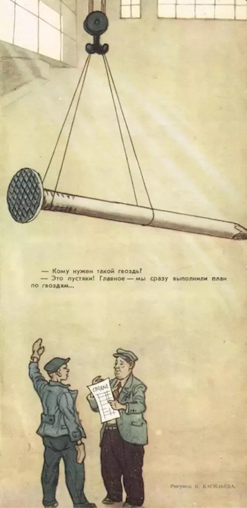

Contradictions
Table of Contents
Melee Rankings are a Game of Contradictions
It's approaching that time of year again: the end of year rankings for SSBM. It's going to be a chaotic year this year – the most competitive top 10 the game has ever seen, and an abrupt changing of the guard for the keepers of the ranks. Given that we have such a special year on our hands, I wanted to talk briefly about some concepts worth keeping in mind for evaluating players – I think the unusually chaotic landscape of 2022 has generated a fairly large number of useful case studies for clearly understanding why certain ways of thinking have pitfalls you might not expect.
Non "Holistic" Methods Punish Success
Goodhart's Law
There is a famous anecdote1 about Soviet factory production, and about how there was an apocryphal problem where factories would produce useless nonsense in order to fit their quotas. From Social Problems in a Free Society: Myths, Absurdities, and Realities:
Production managers frequently met their output goals in ways that were logical within the bureaucratic system of incentives, but bizarre in their results. If the success of a nail factory's output was determined solely by numbers, it would produce extraordinary numbers of pinlike nails; if by weight, smaller numbers of very heavy nails. (A cartoon in the satiric magazine Krokodil featured a proud factory manager displaying his record gross output - a single gigantic nail lifted by a crane.) One Soviet shoe factory manufactured 100,000 pairs of shoes for young boys instead of more useful men's shoes in a range of sizes because doing so allowed them to make more shoes from the allotted leather and receive a performance bonus.

For a machine learning example, we can point to a common interview question: you have a model whose job it is to determine if a credit card transaction is legitimate or fraudulent. Your colleague comes up to you and says they have trained a model which is 99% accurate at this task. Should you use that model? Why or why not?
The problem, of course, is that the vast majority of credit card transactions are, in fact, perfectly legitimate. Since there is a class imbalance of legitimate vs fraudulent, if you just guess "legitimate" every single time, you will be 99% accurate despite having absolutely no ability to detect fraudulent transactions. The problem isn't really your model, it's that you haven't thought about what you are actually measuring, and that your metrics are inappropriate for your task2. This is how you get useless fraud detectors, Soviet factories which only produce tiny nails, and confusing discourse around the ranking of Super Smash Bros players.
An important question to ground discussion for rankings is this: What is the goal of a competitor at a Super Smash Brothers tournament? If you think about this question, really turning it over in your mind for a bit, you might arrive at something like "win the tournament", or maybe the more general "get as far as possible in winners bracket, and if you get knocked into losers bracket, get as far as possible in losers bracket".
Once you have determined this goal, as a panelist, now your job is to figure out some way of measuring how good each player is at this particular thing. You need to do this in a way which, so to speak, detects fraudulent credit card transactions and prevents the factory from making useless nails. How do you do this?
Metrics for Melee
Generally speaking, people fall into three camps when it comes to answering this specific question.
- Using placement, which measures how far a player gets in the tournament
- Using head-to-head records, which allows you to project their likely performance against specific players
- Using tournament victories, which is ostensibly what everybody is trying to do anyways.
All three of these approaches have relative strengths and weaknesses. Broadly speaking, it seems like "spectators" like placement the best, "nerds" like head-to-heads the best, and "players" like victories the best, but of course there is no hard and fast rule here.
Placement
Placement is the most controversial of these: it confers the least information about "difficulty" of a bracket path, it gives higher seeds a much easier path to the same placing, it is the most reliant on luck, and it disproportionately punishes players who end up in the path of a top seed who loses early. The data-minded panelists hate placement; it's seen as a lazy shorthand for a player's performance which skirts the issue of determining the relative value of all of their wins. And yet, there is still something appealing about it. If you look at just a single player, it is strictly better to place higher compared to placing lower. Your opponent in any given part of bracket is unimportant, because the expected reward will go up if you win and it will go down if you lose. In a sense, it is a proper scoring rule, where you have no real incentive to "hedge" your prediction, if you are just trying to predict placement.
Placement, ultimately, is something which I consider to be a generally bad metric. It is, however, not a useless metric, and I think a useful comparison point comes from something I consider to be a generally good metric which has some weird edge cases.
Head-to-Head
Head-to-head, by comparison, is a generally uncontroversial metric. The logic for head-to-heads is very simple: wins against strong players are very valuable, losses against weaker players are quite bad. If your bracket path involved you beating a bunch of very strong players, then it was good even if your placement wasn't as impressive. If you imagine a relatively stable seeding list and vaguely try to simulate the outcomes of 100 tournaments in your head, you end up having to answer a lot of questions like "how often will Mango beat Hungrybox?" in order to determine how well everybody would do on average. With plentiful data, this seems obviously like the metric to use, and it is therefore usually the metric of choice for people who spend every ranking period looking at spreadsheets.
This is all well and good, but there is unfortunately a slight issue with head-to-heads as a metric: it isn't actually what any of the competitors are at the tournament to do. One very easy example of this from 2022 was Hungrybox, whose records you can see in the below crosstable:
Hungrybox has what I consider to be the clear "worst" head-to-heads this year, with just one positive record and one even record, the rest losing. However, you will notice that Hungrybox is an absolutely mind-boggling 11-1 against Jmook this year, which played a relatively large role in the fact that Hungrybox's placements this year were quite competitive within the 2022 season.
Even putting aside tournament victories (which I will get to in a moment), Hungrybox is a near-perfect illustration of why head-to-heads do not tell the complete picture, and about how in extreme cases they can be misleading. In a world where head-to-head is the only thing people care about, Hungrybox is actually highly incentivized to throw sets against Jmook in order to get more chances to correct his poor records against other players. Absolutely nobody looking at head-to-head would notice any difference between 11-1 and 10-2, but the chance to turn that "aMSa" box from red to yellow is very valuable. If he loses this set, no harm done, the box was already red anyways, and the green box is still green. If he wins the set, his head-to-heads look great now.
This would, of course, be very stupid. Nobody is showing up to tournaments in order to correct their tournament records against specific players. They are there to defeat whichever opponent is placed in the chair next to them, at any given moment. Head-to-heads provide the most accurate picture of how well players do against each other, but it is important as a panelist to juggle that with the fact that players are not there to improve their set records - nay, they largely can't even control which opponents they get to play in the first place, other than by throwing on purpose.
Most people I talk to have an opinion that Hungrybox is the clear fifth this year, in 2022. As head-to-head oriented as "nerd" panelists typically are, it is clear that he is not fifth because he has the fifth best set records. There is something else going on here.
Tournament Victories
I would be remiss if I did not talk about arguably the most important metric of all - winning the actual tournament. This is something which in my experience usually gets more visibly reflected in the end-of-year list compared to the summer list, but it is one which is important enough such that players often point to this as the biggest source of "incorrectness" about the list3 - specifically that this is not considered important enough by the nerds.
In some sense this is the most "proper scoring rule" of them all - there's no way to game the metric since "getting first place" is a completely binary variable, unlike placement or set counts. Notably, this is mostly irrelevant for the vast majority of the list – most top 100 players will not win any majors, so you're strong-armed into using one of the earlier two metrics. However, it is an important additional factor when it comes to evaluating the very top of the list, so I'll talk a bit about it here.
There are actually two elements to this which I want to briefly outline, since it actually is a bit more nuanced than it sounds. The two elements are roughly what I will refer to as "accumulated prestige" and "ability to win", which are correlated but distinct things which are both captured by this umbrella of "tournament victory".
Ability to Win
In particular, this was pointed to in MPGR Summer 2022 with respect to Jmook's placement of 3rd in front of Hungrybox and Leffen. For some context: Jmook got 2nd at Genesis, Hungrybox won Get on my Level 2022, and Leffen won Battle of BC 4. All else being equal, most panelists I talked to considered Jmook's run to second place at Genesis to be much more significant than either victory at BoBC or GOML – 2nd place at a supermajor tournament with over 1500 entrants being "worth more" than 1st place at a major tournament with 493 and 281 entrants, respectively.
However, top players generally seemed to not agree: for example, iBDW's opinion on this during his ranking reaction stream was "you have to win something". There's a "first place premium" attached to actually closing a victory which is perhaps lost on some of the lookers-on.
In practice, however, it's extraordinarily rare to see cases where these two things do not generally align. That they did for Jmook in summer 2022 is likely an artifact of both the shortened season and the post-armada wide-open path for many different players to win majors. To illustrate this, in 2022 the following players won majors:
- Zain (x4 Genesis, Pound, Shine, Ludwig Smash Invitational)
- Mango (x4 SSC, LTC, Summit 14, Mainstage)
- aMSa (x3 The Big House, Apex, Scuffed)
- iBDW (x2 Summit 13, Double Down)
- Hungrybox (x2 GOML, Riptide)
- Leffen (x1 Battle of BC)
with Plup also picking up CEO 20224 and aMSa also having The Off-Season5. In comparison, 2017 had the following:
- Hungrybox (x9)
- Armada (x5)
- M2K (x2)
- Mango (x2)
- Leffen (x2)
- Plup (x2)
So while there may be a vaguely similar number of players who could win events6, virtually every year there's a gigantic drop-off point between "the players who win majors" and "the players who can sometimes win a major or two". That this drop-off is completely non-existent in 2022 is unusual, and exciting! But it also forces us to grapple with weird questions like "if someone gets 2nd at every major but never wins, and 1st place at every major is evenly split between a bunch of different players, can the player with no 1sts be #1?" My gut feeling is that the "right" answer to this question is no, but I think it remains to be seen how the greater community would feel in such a scenario.
Accumulated Prestige
I'm going to again kick it back to the cross-table for some head-to-heads:
Zain's head to heads stand out here. Compared to aMSa, Mango, or iBDW's records, they fall short in a lot of ways. The only really notable thing about them is that none of them are dramatically negative: unlike aMSa > Mango, Mango > iBDW, and iBDW > aMSa, Zain seems to stand a pretty decent fighting chance against the whole field. However, the common opinion seems to be that Zain has #1 pretty much locked, with maybe some soft arguments for threats by aMSa and Mango. Why is that?
At the risk of saying the obvious - something invisible on these tables is where the sets happen, and the tournaments where Zain stood out compared to the field happened to be ones which the community considers to be much more important than other tournaments. That is to say: He won Genesis and Ludwig Smash Invitational, two of the three offline tournaments which liquipedia has specifically highlighted as "Supermajors".
I've seen some arguments floating around that aMSa deserves to be rank 1 based on the value of his head-to-head records, and looking at the table above I certainly see where that argument comes from. But, again, I do think it is important to keep in mind, during all of these conversations, that head-to-heads are not what we are actually trying to measure with the rankings, even if head-to-heads are our best metric for understanding the thing we are trying to measure. If the panel ultimately gives the nod to Zain for winning two of the three most prestigious events of the year, in a year where tournament victories were nearly evenly split among the top 5-6 players, that certainly is less ridiculous than it might seem from looking at this table and concluding something "wrong" based on a single metric (e.g. "the panel rewarded zain for having no lopsided negative head-to-heads")
How to Grow a Ballot
The reality is that taking any of these ideas to their logical extremes leads to obviously incoherent outcomes – a holistic approach is the only thing which we have which produces a list which resembles what people in our community consider an accurate picture of the year with respect to how each top player has performed. Too focused on head-to-heads and you overly punish players who defeated the opponents in front of them; too focused on tournament victories and you punish players with stellar head-to-heads. The job of a panelist is a fundamentally impossible one: to assess the relative ordering of players based on metrics which sometimes are directly at odds with each other. It is a game of contradictions: one which forces you to balance results which forecast long-term success with short-term probability of winning a tournament in front of you.
There are all sorts of metrics people bring up when talking about ranking players, and it's important to really, fundamentally grasp that all metrics tell a story, and that you can communicate different things with different metrics. Specific metrics will reward different players for different kinds of performances, and it's of critical importance to think about who benefits / who is harmed by the choice of one metric or another. I consider myself primarily a head-to-head-oriented panelist, but it is just one metric I consider in a suite of metrics which are useful for ranking players based on double elimination brackets – determining the relative importance of each of these metrics is, in some sense, the point of having a panel system in the first place.
So, next time you get into an argument about X player being ranked below Y player for reason Z, think back to the Soviet nail factory. Sometimes, the other guy will be obviously making tiny nails. Other times, you will be.
Footnotes:
If you get this question in an interview, some good answers are: Balanced accuracy, Area Under Precision Recall Curve (AUPRC), F1 score, Matthews Correlation Coefficient. Do not fall into the trap of saying ROC (bad for very imbalanced scenarios)
This or "attendance" which is an extra dicey can of worms this year given how many players got COVID-19 after traveling many weeks in a row.
Not really a major but counted as one so plup would meet attendance requirements for summer rank – feels weird to bring up but also feels weird to not mention.
Don't do "Is The Off Season a Major" discourse under this post, please.
Also debateable, fwiw; 2017 had more major events, so who knows how many players pick up one or two with a few extra omicron-free / panda-free majors available.